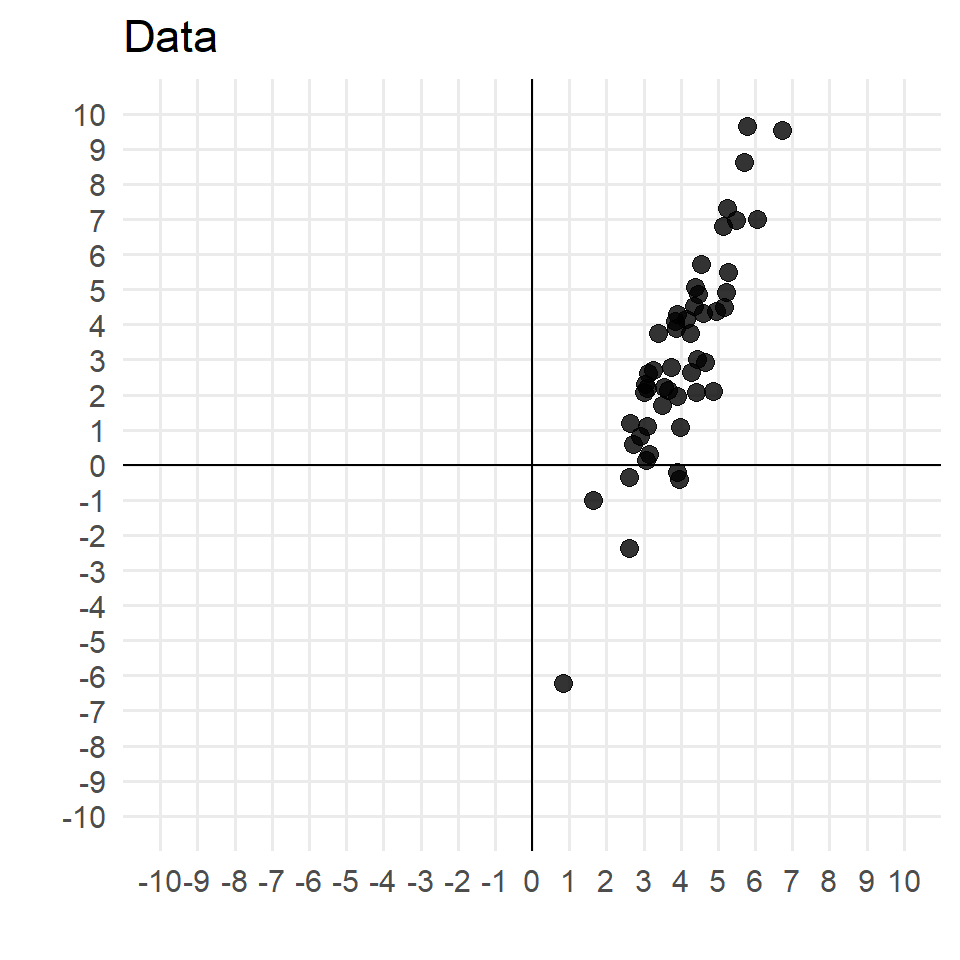
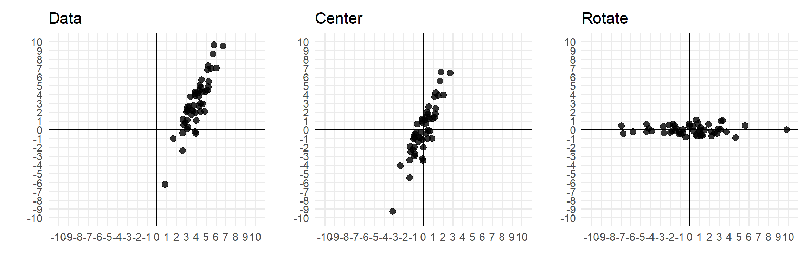
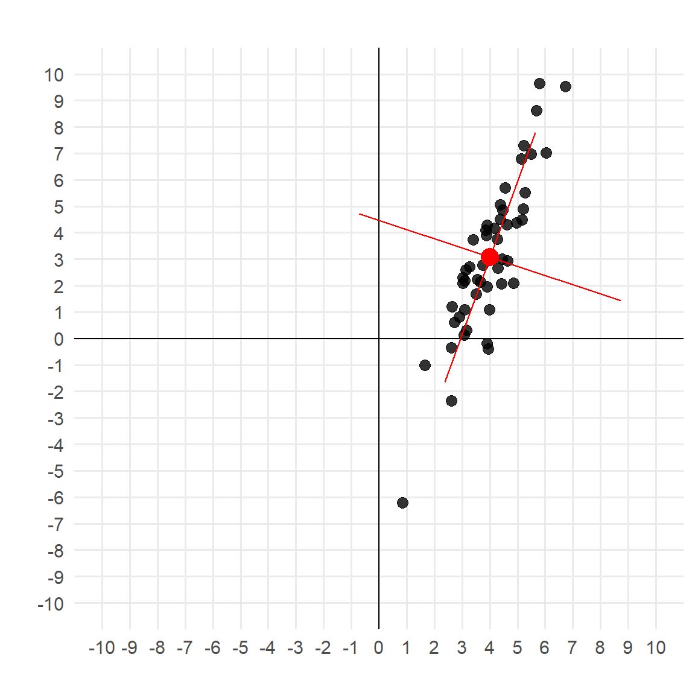
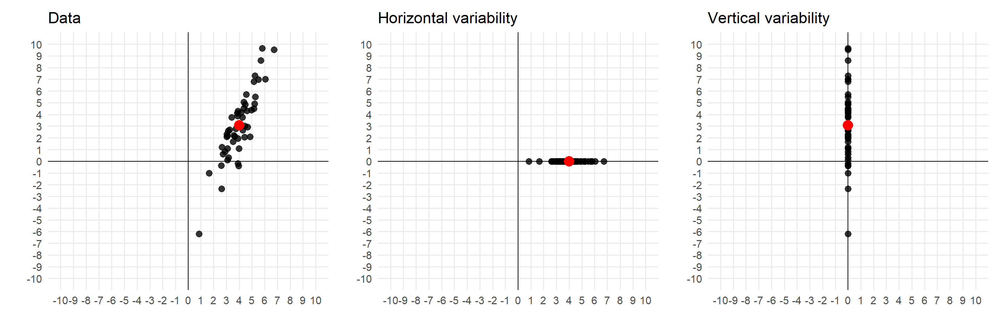
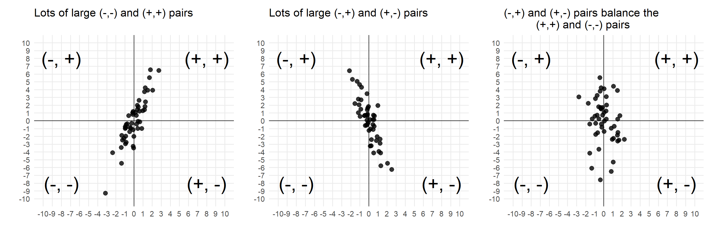
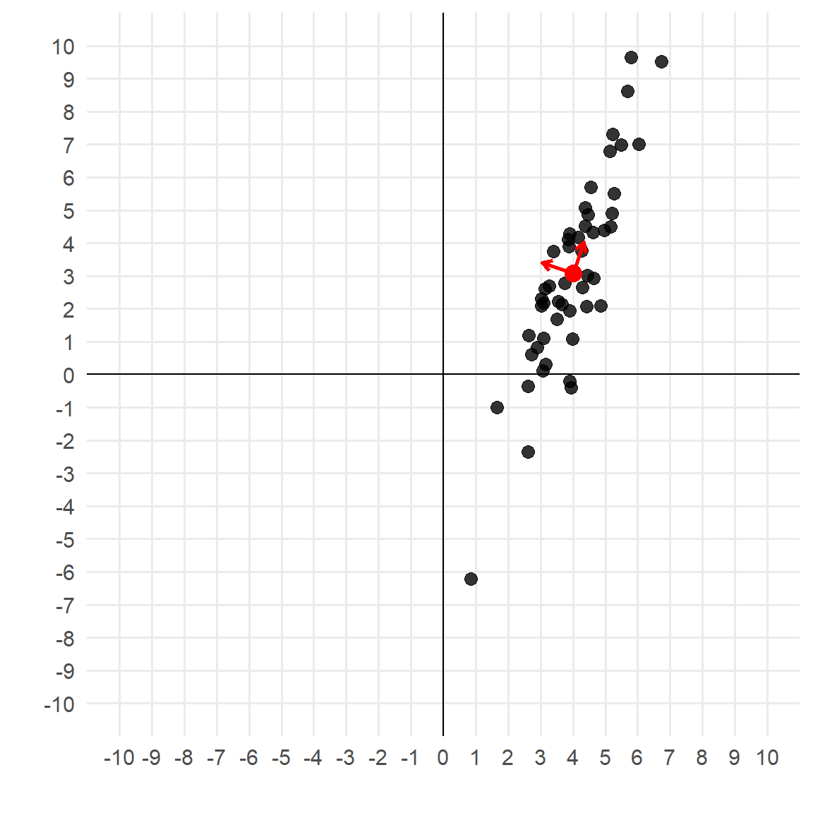
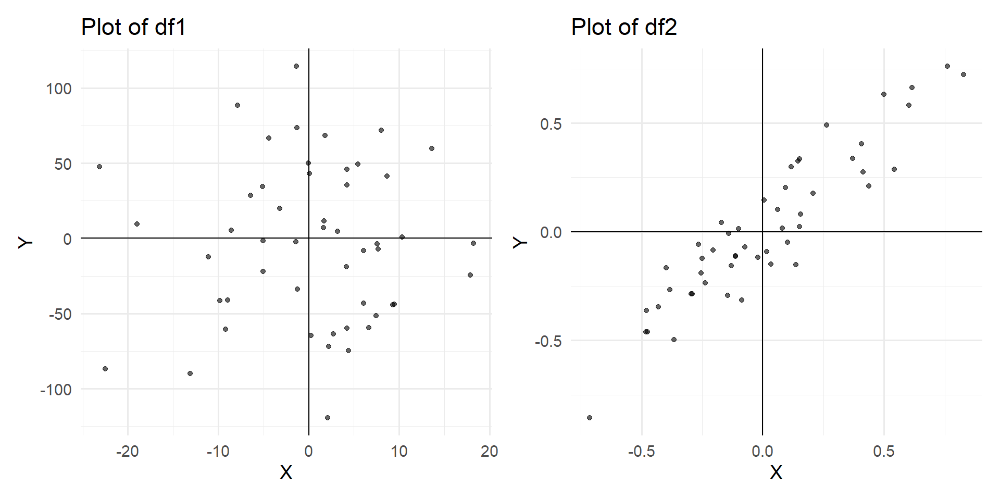

1.3 - covariance and eigendecomposition
Case study
As our case study, we’re going to use some simulated data.
library (MASS)# parameters <- c (4 , 3 )<- 1 <- 3 <- 0.8 <- 50 # Covariance matrix <- matrix (c (sig1^ 2 , rho* sig1* sig2,* sig1* sig2, sig2^ 2 ), 2 , 2 )# Simulate n observations set.seed (555 ) # for reproducibility <- mvrnorm (n= n, mu= mu, Sigma= Sigma)# Convert to data frame for plotting <- data.frame (data)names (df) <- c ('x' ,'y' )head (df)
x y
1 3.085552 2.189201
2 4.368236 4.522703
3 4.151895 4.165595
4 5.690867 8.624101
5 2.615748 -2.358321
6 5.267545 5.505842
Goal
Consider plot of the data below:
Suppose we want to:
Center the data on the origin;
Rotate it so that:
it is no longer correlated;
maximal variability is along the first (horizontal) dimension
Visual goal
This is one of the fundamental ideas behind principal component analysis , which we’ll cover in much more detail later on.
Defining new axes
Conceptually, the way we accomplish this is not by transforming the points , but by defining new axes :
… so how do we do this?
The mean vector
The first part is easy.
The coordinates of the new axis origin are simply the mean vector:
<- apply (df, 2 , mean)

The covariance matrix
The next ingredient is the covariance matrix.
For \(p=2\) dimensions, this measures:
Horizontal variability;
Vertical variability;
Covariance
Horizontal and vertical variance
Horizontal and vertical variances are also known as marginal variances

Given mean-centered \(n\times 1\) column vectors \(x_c\) and \(y_c\) :
Horizontal marginal variability: \(\frac{1}{n-1}x_c^T x_c\)
Vertical marginal variability: \(\frac{1}{n-1}y_c^T y_c\)
Computing horizontal and vertical variability
# Mean-center the columns: <- scale (df, center = TRUE , scale = FALSE )
Computing horizontal and vertical variability
# Mean-center the columns: <- scale (df, center = TRUE , scale = FALSE )#Horizontal variability: <- df_centered[,1 ]t (x_c) %*% x_c / (n-1 )
Computing horizontal and vertical variability
# Mean-center the columns: <- scale (df, center = TRUE , scale = FALSE )#Horizontal variability: <- df_centered[,1 ]t (x_c) %*% x_c / (n-1 )#Vertical variability: <- df_centered[,2 ]t (y_c) %*% y_c/ (n-1 )
Does this match our visual intuition?
Covariance
Covariance looks at the mean-centered data:
Then considers whether the \((x,y)\) pairs are above or below their means:
Covariance
Large \((+,+)\) and \((-,-)\) pairs contribute to large positive covariance
Large \((+,-)\) and \((-,+)\) pairs contribute to large negative covariance

Computing covariance
To compute covariance: \(\frac{1}{n-1}x_c^T y_c\)
All ingredients (horizontal variance, vertical variance, and covariance) are often included in the covariance matrix , frequently notated by \(\Sigma\) :
\[ \Sigma = \begin{pmatrix} \mbox{Horizontal variance} & \mbox{Covariance} \\ \mbox{Covariance} & \mbox{Vertical variance} \end{pmatrix}\]
x y
x 1.276887 2.946598
y 2.946598 8.774893
Covariance interpretation
Let’s take another look at this matrix:
x y
x 1.276887 2.946598
y 2.946598 8.774893
Sum of diagonal: total information in data
Off-diagonal: information in common between columns
Quiz question
Match the covariance matrices to the scatterplot.
Eigen decomposition
We know where the new axis origin is:
We have the \(2 \times 2\) covariance matrix \(\Sigma\) that tells us about vertical variance, horizontal variance, and covariance:
x y
x 1.276887 2.946598
y 2.946598 8.774893
What we need are the vectors that start from the new origin to form our new axis!
Eigenvector
Consider a \(p\times p\) matrix \(A\) .
A \(p\) -vector \(v\) is an eigenvector of \(A\) if, for a scalar \(\lambda\) :
\[A v = \lambda v\]
In other words, eigenvectors are vectors that \(A\) merely shrinks or elongates .
Is it an eigenvector?
\[ v_1 = \begin{pmatrix} 1 \\0 \end{pmatrix}; \ \ \ \
v_2 = \begin{pmatrix} 0 \\1 \end{pmatrix}; \ \ \ \
v_3 = \begin{pmatrix} 2 \\2 \end{pmatrix}\] \[v_4 = \begin{pmatrix} 0.5 \\ 0.5 \end{pmatrix};\ \ \
v_5 = \begin{pmatrix} 2 \\ 4 \end{pmatrix};\ \ \
v_6 = \begin{pmatrix} 1/3 \\ 0 \end{pmatrix}\]
Finding eigenvalues
There are infinitely many eigenvectors for a matrix \(A\) , but at most \(p\) eigenvalues.
Thus, eigendecomposition starts with finding the candidate eigenvalues .
An eigenvalue of \(A\) , a scalar notated \(\lambda\) , satisfies the equation:
\[det(A - \lambda I) = 0\]
this is sometimes referred to as the characteristic polynomial .
Finding eigenvalues
\[A - \lambda I = \begin{pmatrix} 2 & 1 \\ 0 & 3 \end{pmatrix} - \begin{pmatrix} \lambda & 0 \\ 0& \lambda \end{pmatrix} \]
\[ = \begin{pmatrix} 2-\lambda & 1 \\ 0 & 3-\lambda \end{pmatrix} \]
\[det(A-\lambda I) = (2-\lambda)(3-\lambda) = 0\]
Solutions: \(\lambda = 3\) or \(\lambda = 2\)
Finding eigenvectors
Eigenvalues of \(A = \begin{pmatrix} 2 & 1 \\ 0 & 3 \end{pmatrix}\) are \(\lambda = 2\) or \(\lambda = 3\) .
Thus the eigenvectors of \(A\) are vectors that \(A\) either doubles or triples in magnitude!
Reconsider the eigenvectors we identified earlier:
\[ v_1 = \begin{pmatrix} 1 \\0 \end{pmatrix}; \ \ \ \
v_3 = \begin{pmatrix} 2 \\2 \end{pmatrix}; \ \ \ \
v_4 = \begin{pmatrix} 0.5 \\ 0.5 \end{pmatrix};\ \ \
v_6 = \begin{pmatrix} 1/3 \\ 0 \end{pmatrix}\]
Which ones does \(A\) double? Which ones does \(A\) triple?
Finding eigenvectors for \(\lambda = 3\)
To find eigenvectors for \(\lambda = 3\) (ones that \(A\) triples), recall eigenvectors satisfy:
\[Av = \lambda v = 3v\]
In matrix form:
\[\begin{pmatrix} 2 & 1 \\ 0 & 3 \end{pmatrix}\begin{pmatrix} x \\ y\end{pmatrix} = 3 \begin{pmatrix} x\\ y \end{pmatrix}\]
\[ \begin{pmatrix} 2x+y \\ 0x + 3y \end{pmatrix} = \begin{pmatrix}3x \\ 3y \end{pmatrix}\]
Thus \(v = \begin{pmatrix} 1\\ 1 \end{pmatrix},\) or any multiple of \(v\) , is an eigenvector that \(A\) triples!
Finding eigenvectors for \(\lambda = 2\)
To find eigenvectors for \(\lambda = 2\) (ones that \(A\) doubles), recall eigenvectors satisfy:
\[Av = \lambda v = 2v\]
In matrix form:
\[\begin{pmatrix} 2 & 1 \\ 0 & 3 \end{pmatrix}\begin{pmatrix} x \\ y\end{pmatrix} = 2 \begin{pmatrix} x\\ y \end{pmatrix}\]
\[ \begin{pmatrix} 2x+y \\ 0x + 3y \end{pmatrix} = \begin{pmatrix}2x \\ 2y \end{pmatrix}\]
Thus \(v = \begin{pmatrix} 1\\ 0 \end{pmatrix},\) or any multiple of \(v\) , is an eigenvector that \(A\) doubles!
Eigenvectors of symmetric matrices are orthogonal !
If we are decomposing a symmetric \(p\times p\) matrix \(B\) , then eigenvectors for different eigenvalues are orthogonal!
Recall that orthogonal (i.e., perpendicular) vectors have dot product = 0
Recall eigenvectors for \(A =\begin{pmatrix} 2 & 1 \\ 0 & 3 \end{pmatrix}\) : \(v_1=\begin{pmatrix} 1\\ 0 \end{pmatrix}\) and \(v_2 = \begin{pmatrix} 1\\ 1 \end{pmatrix}\) . Are they orthogonal? Why/why not?
The orthogonality of eigenvectors of symmetric matrices is important for decomposing covariance matrices! (coming up)
Eigenbases
For \(\lambda = 3\) , \(\begin{pmatrix} 1 \\ 1 \end{pmatrix}\) or any multiple thereof is an eigenvector.
For \(\lambda = 2\) , \(\begin{pmatrix} 1 \\ 0 \end{pmatrix}\) or any multiple thereof is an eigenvector.
Thus for any eigenvalue there are infinitely many eigenvectors.
Eigenbases are unique, normed (length-1) vectors for each eigenvalue
\[v_{norm} = \frac{v}{||v||_2}\]
Eigenbase for \(\lambda = 3\)
L2-normed \(\lambda = 3\) eigenvector \(\begin{pmatrix} 1 \\ 1 \end{pmatrix}\) :
\[ \sqrt{1^2 + 1^2} = \sqrt{2}\]
Normed \(\lambda = 3\) eigenvector:
\[\begin{pmatrix} 1/\sqrt{2} \\ 1/\sqrt{2} \end{pmatrix} =\begin{pmatrix} 0.7071068 \\ 0.7071068 \end{pmatrix} \]
Eigenbase for \(\lambda = 2\)
L2-normed \(\lambda = 2\) eigenvector \(\begin{pmatrix} 1 \\ 0 \end{pmatrix}\) :
\[ \sqrt{1^2 + 0^2} = \sqrt{1}\]
So \(\begin{pmatrix} 1 \\ 0 \end{pmatrix}\) already has L2 norm = 1!
eigen in RTo find eigenvalues and eigenbases in R:
<- matrix (c (2 ,1 ,0 ,3 ),2 ,2 , byrow= TRUE )eigen (A)
eigen() decomposition
$values
[1] 3 2
$vectors
[,1] [,2]
[1,] 0.7071068 1
[2,] 0.7071068 0
Tying it all together
So we have this covariance matrix (which, by the way, is symmetric, as all covariance matrices will be):
x y
x 1.276887 2.946598
y 2.946598 8.774893
The eigenbases of \(\Sigma\) are the new axes we want!!
And, since \(\Sigma\) is symmetric, they are guaranteed orthogonal (so will work as new axes).
<- eigen (Sigma)
eigen() decomposition
$values
[1] 9.7942712 0.2575082
$vectors
[,1] [,2]
[1,] 0.3269394 -0.9450453
[2,] 0.9450453 0.3269394
Plotting the bases
<- eig_decomposition$ vectors<- data.frame (t (eigenvectors)) %>% mutate (mean_x = meanvec[1 ], mean_y = meanvec[2 ]) %>% rename (evector_xdirection = X1, evector_ydirection = X2)
evector_xdirection evector_ydirection mean_x mean_y
1 0.3269394 0.9450453 4.004742 3.075866
2 -0.9450453 0.3269394 4.004742 3.075866
<- base + geom_point (aes (x = x, y = y), data = df, alpha = 0.8 , size = 3 ) + geom_point (aes (x = mean_x, y = mean_y), data = vectordf, color= 'red' ,size = 4 ) + geom_segment (aes (x = mean_x, y = mean_y, xend = mean_x + evector_xdirection, yend = mean_y + evector_ydirection), color= 'red' , data = vectordf, arrow = arrow (length = unit (0.2 , "cm" )), linewidth = 1 )
Scaling the bases
In this plot we see the directions of the axes:

The eigenvalues give us a sense as to how much variability is in the direction of each axis:
These values indicate there is a lot more variability in the \(e_1\) (first eigenvector) direction than in the \(e_2\) (second eigenvector) direction.
Scaling the bases
We can scale the axes accordingly by the square root of the eigenvalues:
<- data.frame (t (eigenvectors)) %>% mutate (mean_x = meanvec[1 ], mean_y = meanvec[2 ]) %>% rename (evector_xdirection = X1, evector_ydirection = X2) %>% mutate (evector_xdirection_scaled = sqrt (eigenvalues)* evector_xdirection,evector_ydirection_scaled = sqrt (eigenvalues)* evector_ydirection)
evector_xdirection evector_ydirection mean_x mean_y
1 0.3269394 0.9450453 4.004742 3.075866
2 -0.9450453 0.3269394 4.004742 3.075866
evector_xdirection_scaled evector_ydirection_scaled
1 1.0231830 2.9575949
2 -0.4795658 0.1659063
Interpreting the eigenvalues
x y
x 1.276887 2.946598
y 2.946598 8.774893
… so the total horizontal and vertical variance is 10.0517794.
Now consider the eigenvalues:
… so the summed eigenvalues also equal the total horizontal and vertical variance!!
Eigenvalues as new covariance diagonals
Let’s look at the covariance matrix of the centered, rotated data:
cov (df_rotated) %>% round (4 )
x y
x 9.7943 0.0000
y 0.0000 0.2575
Hopefully these look familiar:
Thus the eigenvalues tell us the total horizontal and vertical variability of the mean centered data rotated to orient along the eigenvectors!
Summary
Covariance matrix \(\Sigma\) : symmetric \(p\times p\) matrix
Marginal variance of each dimension on the diagonal
Covariance on the off-diagonals
Eigenvectors of a square \(p\times p\) matrix \(A\)
Vectors that \(A\) scales by a constant
Can be normalized to determine eigenbases
If \(A\) is symmetric, eigenvectors of different eigenvalues are orthogonal
Eigenvalues
Scalars that tell us how much eigenvectors are scaled by \(A\)
Summary
Eigendecomposition of \(\Sigma\) :
Eigenvectors
tell us which directions the reoriented axes go;
give us rules for rotating the data to be uncorrelated and reoriented;
are orthogonal (since \(\Sigma\) is symmetric)
Eigenvalues tell us the values of marginal horizontal and vertical variance after rotation
Correlation vs covariance
Consider the following two covariance matrices from two data sets, df1 and df2.
In both, we know the covariance but not the marginal (horizontal/vertical) variances:
\[ \Sigma_1 = \begin{pmatrix}{? & 100 \\ 100 & ?}\end{pmatrix}\ \ \ \Sigma_2 = \begin{pmatrix}{? & 0.1 \\ 0.1 & ?}\end{pmatrix}\]
Which matrix represents a data with more relationship between the two columns?
Correlation vs covariance
Consider the following two covariance matrices from two data sets, df1 and df2.
In both, we know the covariance but not the marginal (horizontal/vertical) variances:
\[ \Sigma_1 = \begin{pmatrix}? & 50 \\ 50 & ?\end{pmatrix};\ \ \ \Sigma_2 = \begin{pmatrix}? & 0.1 \\ 0.1 & ?\end{pmatrix}\]
Which matrix represents a dataset with more relationship between the two columns?
Plotting the two data sets

Which data set has more relationship?
What differences do you notice about between these two data sets?
Covariance vs correlation
Let \(\sigma_1^2\) represent the marginal variance in the first dimension (e.g., horizontal)
Let \(\sigma_2^2\) represent the marginal variance in the second dimension (e.g., vertical)
The correlation , \(\rho\) , between two variables \(x\) and \(y\) is defined as:
\[\rho = \frac{Cov(x,y)}{\sigma_1 \sigma_2}\]
Note that this also implies that \(Cov(x,y) = \rho \sigma_1 \sigma_2\) ; in other words, that the covariance is a function both of the relationship between variables and the marginal variances!
Facts about \(\rho\)
Unitless
\(-1 \leq \rho \leq 1\) \(|\rho|\) close to 1 \(\rightarrow\) strong relationship\(|\rho|\) close to 0 \(\rightarrow\) weak relationship
Covariance - correlation relationship
For 2D data:
\[\Sigma = \begin{pmatrix}\sigma_1^2 & \sigma_1 \sigma_2 \rho\\
\sigma_1 \sigma_2 \rho & \sigma_2^2 \end{pmatrix}\]
\[R = \begin{pmatrix}1 & \rho\\
\rho & 1 \end{pmatrix}\]
For \(p\) -dimensional data:
\[\Sigma = \begin{pmatrix}\sigma_1^2 & \sigma_1 \sigma_2 \rho_{12} & \sigma_1 \sigma_3 \rho_{13} & ... & \sigma_1 \sigma_p \rho_{1p}\\
\sigma_1 \sigma_2 \rho_{12} & \sigma_2^2 & \sigma_2 \sigma_3 \rho_{23} & ... & \sigma_2 \sigma_p \rho_{2p}\\
\vdots & \vdots & \ddots & \vdots & \vdots \\
\sigma_1 \sigma_p \rho_{1p} & \sigma_2\sigma_p \rho_{2p} & \sigma_3 \sigma_p \rho_{3p} & ... & \sigma_p^2\end{pmatrix}\]
\[R = \begin{pmatrix}1 & \rho_{12} & \rho_{13} & ... & \rho_{1p}\\
\rho_{12} & 1 & \rho_{23} & ... & \rho_{2p}\\
\vdots & \vdots & \ddots & \vdots & \vdots \\
\rho_{1p} & \rho_{2p} & \rho_{3p} & ... & 1\end{pmatrix}\]
Find the correlation
The two covariance matrices I used to simulate df1 and df2 were:
\[ \Sigma_1 = \begin{pmatrix}100 & 50 \\ 50 & 2500\end{pmatrix};\ \ \ \Sigma_2 = \begin{pmatrix}1/9 & 0.1 \\ 0.1 & 1/9\end{pmatrix}\]
What is \(\rho_1\) , the correlation between the two variables for df1?
What is \(\rho_2\) , the correlation between the two variables for df2?
Simulated data sets
Code I used for simulating the two data sets:
#Parameters: <- 10 ; sigy <- 50 ; rho <- 0.1 <- matrix (c (sigx^ 2 , sigx* sigy* rho,* sigy* rho,sigy^ 2 ), nrow= 2 )<- 1 / 3 ; sigy <- 1 / 3 ; rho <- .9 <- matrix (c (sigx^ 2 , sigx* sigy* rho,* sigy* rho,sigy^ 2 ), nrow= 2 )# Simulate data library (MASS)set.seed (944 )<- data.frame (mvrnorm (n = 50 , mu = c (0 ,0 ), Sigma1))names (df1)= c ("X" ,"Y" )<- data.frame (mvrnorm (n = 50 , mu = c (0 ,0 ), Sigma2))names (df2)= c ("X" ,"Y" )
Finding the covariance and correlation matrices:
X Y
X 80.744 11.723
Y 11.723 2750.287
X Y
X 1.000 0.025
Y 0.025 1.000
X Y
X 0.121 0.110
Y 0.110 0.118
X Y
X 1.000 0.923
Y 0.923 1.000
Correlation = covariance of scaled data!
It turns out that \(R\) for a data set is just \(\Sigma\) if we scale the data first!
# Correlation of unscaled data: cor (df1) %>% round (3 )
X Y
X 1.000 0.025
Y 0.025 1.000
#Scale the data: <- scale (df1)#Covariance of scaled data: cov (df1_scaled) %>% round (3 )
X Y
X 1.000 0.025
Y 0.025 1.000
# Correlation of unscaled data: cor (df2) %>% round (3 )
X Y
X 1.000 0.923
Y 0.923 1.000
#Scale the data: <- scale (df2)#Covariance of scaled data: cov (df2_scaled) %>% round (3 )
X Y
X 1.000 0.923
Y 0.923 1.000
Implications for eigendecomposition
\(\Sigma\) :
Eigenvectors tell us the coordinates of the new axes in original space (or equivalently, how to rotate the data in original coordinates)
Eigenvalues sum to total diagonals of \(\Sigma\) (total marginal variances)
\(R\) :
Eigenvectors tell us the coordinates of the new axes in scaled space (or equivalently, how to rotate the scaled data)
Eigenvalues sum to total diagonals of \(R\)
What will eigenvalues sum to if doing eigendecomposition of any \(p\times p\) correlation matrix?
df1
eigen() decomposition
$values
[1] 2750.33837 80.69275
$vectors
[,1] [,2]
[1,] 0.004391318 -0.999990358
[2,] 0.999990358 0.004391318
eigen() decomposition
$values
[1] 1.0248771 0.9751229
$vectors
[,1] [,2]
[1,] 0.7071068 -0.7071068
[2,] 0.7071068 0.7071068
df2
eigen() decomposition
$values
[1] 0.228947488 0.009138127
$vectors
[,1] [,2]
[1,] -0.7118287 0.7023531
[2,] -0.7023531 -0.7118287
eigen() decomposition
$values
[1] 1.92322439 0.07677561
$vectors
[,1] [,2]
[1,] 0.7071068 -0.7071068
[2,] 0.7071068 0.7071068